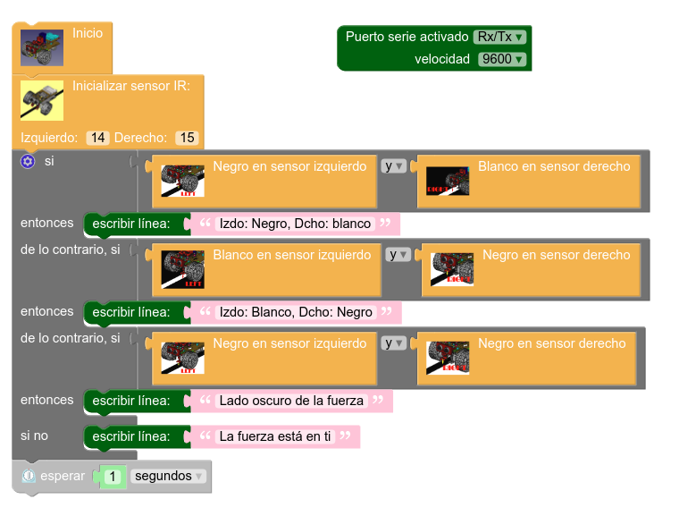
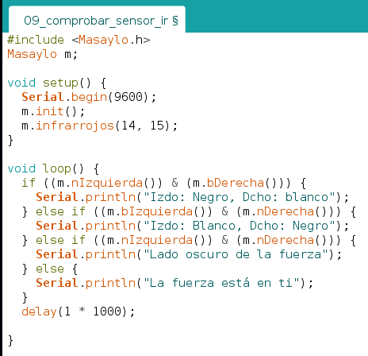

Reto
- Duración:
- 15:00
- Agrupamiento:
- 1
En este reto el robot transmite cada segundo por puerto serie al ordenador la información del estado de los dos sensores de infrarrojos. Recordamos que al haber dos sensores las combinaciones de estados de ambos a la vez son cuatro.
| Código Masayloblockly: | Código IDE Arduino: |
|  |  |